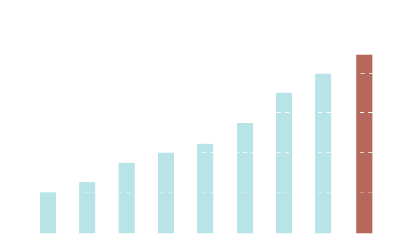

iGEMKyotoは、合成生物学の世界大会iGEMで上位入賞することを目標に活動しています。2018,2017年度大会ではSilver Medalを、2016年度大会では遺伝子組み換え大腸菌により腸管内ノロウイルスを除去するシステムの開発プロジェクトを進め、Gold Medalを獲得することができました。

しかし、近年iGEMの大会参加費の増加による支出増に悩まされております。2015年度大会の参加費は4000ドルとなっており、メンバーの自費で活動資金をまかなっている私たちにとって多大な負担を強いる額でした。そのため、2015年度大会への出場を断念せざるを得ませんでした。 2016年度大会では、 SPEC 2015でご支援いただいた補助金を利用し、参加費4500ドルを含めた活動資金をまかなうことができました。ご支援いただいた皆様、本当にありがとうございました。
来る2017年度大会の参加費は2016年度と同じ4500ドルであることが分かり、依然として厳しい運営を強いられる事態となっています。現在、iGEMKyotoは2017年度大会に向けた活動資金を募っています。皆様のご厚志を賜ることができれば幸いです。心強いご支援心からお待ち申し上げております。